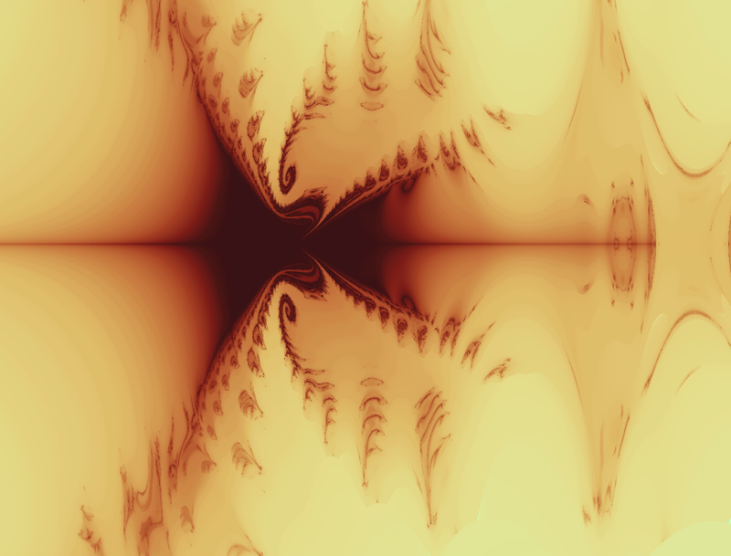

Interactive escape fractal shader
Renders a family of Mandelbrot-like escape fractals over the complex plane
Interactive newton fractal shader
Renders a fractal based on the instability of the Newton-Phapson algorith for finding polynomial roots

Interactive quaternion Julia set raymarcher
An analog to 2D Julia sets for 4D quaternions. This raymarcher visualizes a 3D "slice" of the full 4D fractal